Unidad V
5.1 Teorema de Pitágoras
Triangulos rectángulos
Antes de ver el teorema de Pitágoras, conviene recordar algunos conceptos que nos pueden ayudar a comprender mejor el teorema. Lo primero que debemos recordar es lo concerniente a los triángulos rectángulos. Un triángulo rectángulo, es cualquier triángulo que tenga un ángulo que mida 90°, (recuerda que puedes medir ángulos con el transportador). Pero como es muy tedioso estar midiendo los ángulos de cada triángulo que vayamos a trabajar, se suele denotar un angulo recto (angulo que mide 90°) de un triángulo, dibujando un pequeño cuadradito junto al ángulo que mide 90°, de esta forma podemos identificar más fácilmente las partes de un triángulo rectángulo.
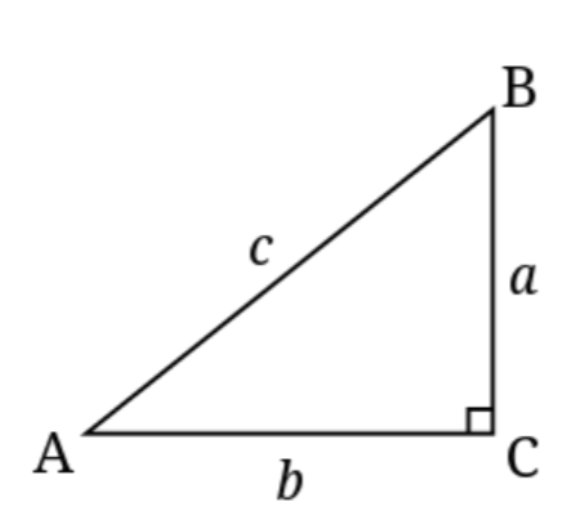En la imagen anterior observamos que, además del pequeño cuadro que nos indica cual es ángulo recto de este triángulo, hay varias letras, estas letras nos sirven para identificar tanto los lados como los ángulos, son una especie de nombres que nos ayudan a referirnos a un lado o a un ángulo en específico de una forma más directa y sencilla. En este caso, las letras minúsculas son las que dan nombre a los lados mientras que las mayúsculas hacen lo propio con los ángulos, de esta forma, de acuerdo con la siguiente imagen, podemos saber que el ángulo recto puede ser identificado mediante la letra “C”, y los otros ángulos se llaman “A” y “B”.
Para ocupar el teorema de Pitágoras es muy importante identificar la hipotenusa del triángulo, la hipotenusa es simplemente el lado más largo del triángulo, este suele ser el lado opuesto al ángulo recto del triángulo, es decir el lado que está enfrente del ángulo recto. En nuestra imagen de ejemplo, la hipotenusa está designada con la letra “c” minúscula.
Los otros lados designados en la imagen por las letras “a” y “b” se llaman catetos, estos suelen ser los lados que se encuentran adyacentes al ángulo recto, es decir, que el ángulo recto se encuentra en medio de ambos catetos. Ahora que están definidos los lados de un triángulo rectángulo podemos enunciar el teorema de Pitágoras.
Teorema de Pitágoras
El teorema de Pitagoras dice que, Si a y b son las longitudes de los catetos de un triángulo rectángulo y c es la longitud de la hipotenusa, entonces la suma de los cuadrados de las longitudes de los catetos es igual al cuadrado de la longitud de la hipotenusa. Esto se expresa de forma algebraica con la siguiente expresión:
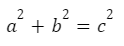Por si se te dificulta entender la expresión anterior, vamos a verla de manera más gráfica. El teorema habla de la suma de los cuadrados de las longitudes de los catetos, así que empecemos por ahí, para entender qué es el cuadrado de la longitud de un cateto, empecemos por imaginar un triángulo que tenga un cateto cuya longitud sea igual a 3 unidades.
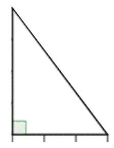Las marcas que se observan en el cateto de abajo del triángulo representan la unidad de medida, pueden ser centímetros, metros, etc. Con esto tenemos la longitud de un cateto, ahora bien el cuadrado de la longitud de un cateto no es más que el área de un cuadrado cuyo lado sea igual a la longitud del cateto. Por lo que para observar esto podríamos dibujar un cuadrado tomando como lado el cateto de tres unidades, quedando de la siguiente forma.
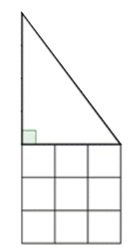Por lo que ya tenemos el cuadrado de la longitud de un cateto, pero recordemos que el teorema dice algo de la suma de los cuadrados de las longitudes de los catetos, por lo que nos hace falta el cuadrado de la longitud del otro cateto, para esto digamos que el otro cateto mide 4 unidades, de forma que al dibujar su cuadrado se veria asi.
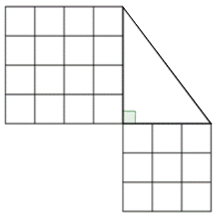Entonces, lo que dice el teorema es que la suma de los cuadrados de las longitudes de los catetos es igual al cuadrado de la longitud de la hipotenusa. Entonces tendríamos la siguiente suma.
Si descomponemos cada cuadro en sus unidades cuadradas y luego las reacomodamos formando con ellas un nuevo cuadro más grande obtendremos el siguiente cuadro.
Este cuadro es la representación de la suma de los cuadrados de las longitudes de los catetos, por lo que de acuerdo al teorema, también es el cuadrado de la longitud de la hipotenusa. Por lo que la longitud de uno de los lados del cuadrado es la longitud de la hipotenusa del triángulo. De forma que podemos dibujar lo siguiente.
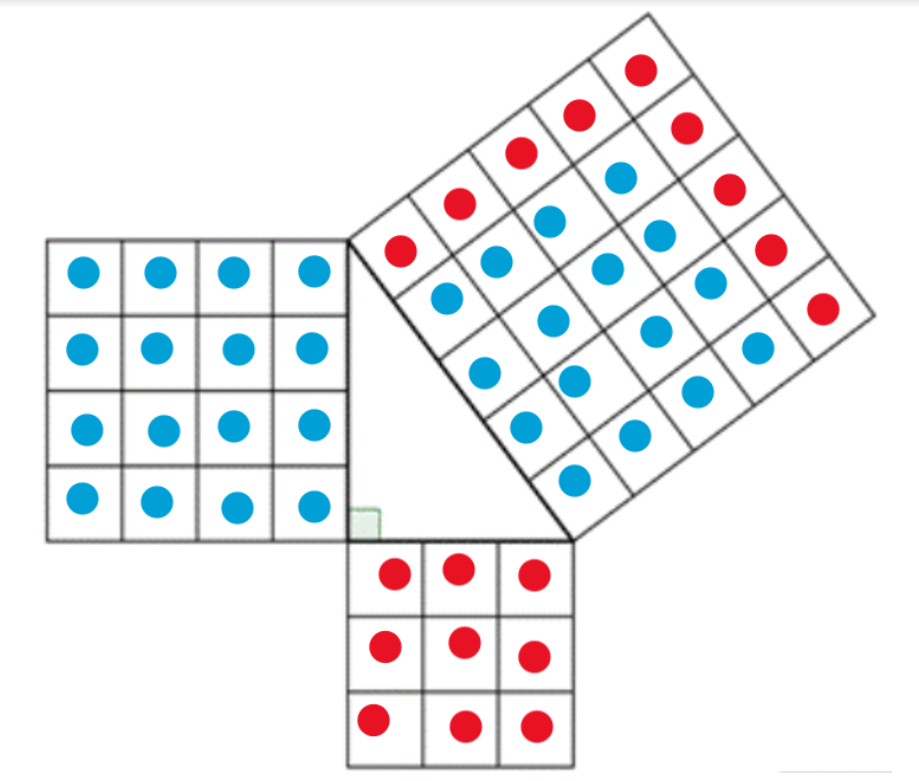Y de esta forma podemos apreciar gráficamente la relación expresada por el teorema de Pitágoras.
Ahora hagámoslo con números. En el mismo ejemplo anterior, digamos que el cateto “a” es el lado que mide 3 unidades, y el cateto “b” es el que mide 4 unidades. Además como vimos al final la hipotenusa mide 5 unidades. Entonces tenemos los siguientes datos.
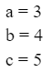Entonces, calculamos los cuadrados de las longitudes de los catetos y los de la hipotenusa, para lo cual simplemente hay que multiplicar la longitud por sí misma, por lo que tenemos.
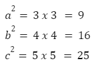De acuerdo al teorema, al sumar los cuadrados de los catetos se obtiene el de la hipotenusa por lo que en este caso al sumarlos debemos obtener 25, por lo que vamos a sumarlos.
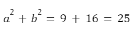Al sumar nos da 25 que es lo mismo que el cuadrado de la hipotenusa, por lo que, lo que el teorema nos dice se ha cumplido.
El principal uso que se le da al teorema de Pitágoras es para encontrar la longitud del tercer lado de un triángulo cuando tenemos dos de ellos, ya sea que tengamos los catetos o un cateto y la hipotenusa, gracias al álgebra podemos encontrar la longitud del lado faltante.
Por ejemplo, supongamos que tenemos el siguiente triángulo rectángulo, observamos que conocemos la longitud del cateto a y la longitud del cateto b por lo que hay que calcular la longitud de la hipotenusa c.
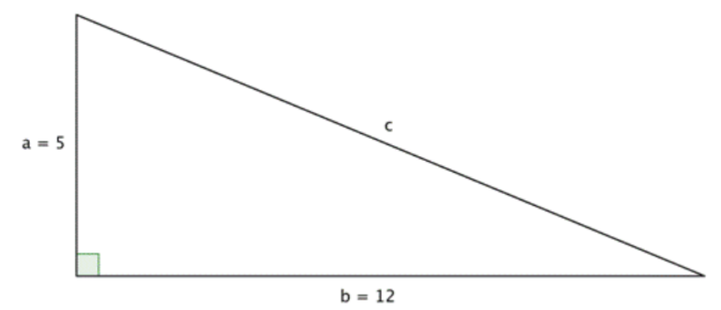Para ello seguimos los siguientes pasos.
Primero escribimos el teorema de Pitágoras.
Tenemos los siguientes datos: a = 5 y b = 12. Por lo que hay que sustituirlos en la fórmula. Quedando de la siguiente forma.
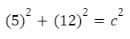Encontramos los cuadrados multiplicando las longitudes por sí mismas y luego sumamos.
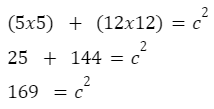Hemos encontrado el cuadrado de la hipotenusa, pero nosotros queremos la longitud, para lograr esto es necesario encontrar un número que al ser multiplicado por sí mismo nos de como resultado 169, esto lo logramos aplicando la raíz cuadrada a ambos lados de la ecuación.
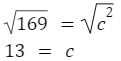Y con esto encontramos la longitud de la hipotenusa la cual es de 13 unidades.
Para encontrar uno de los catetos cuando tenemos la hipotenusa y el otro cateto se sigue un procedimiento muy similar pero con algunas pequeñas variaciones. Veamos el siguiente ejemplo donde nos piden calcular el cateto a.
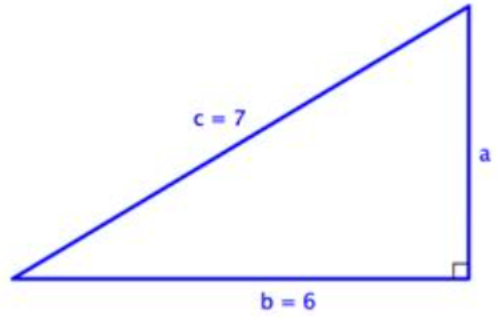Escribimos el teorema de Pitágoras.
Tenemos los siguientes datos: b = 6 y c = 7. Observamos que en este caso queremos encontrar “a” pero nos esta estorbando “b” por lo que hay que despejar.
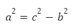Ya hemos despejado “a” por lo que procedemos a sustituir los valores conocidos. Y luego operamos como en el primer ejemplo.
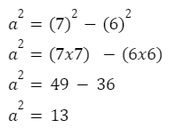Aplicamos la raíz cuadrada a ambos lados de la ecuación.
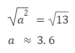y con esto encontramos la longitud del cateto “a”.
Y de esta forma es como se encuentra uno de los catetos de un triángulo rectángulo cuando tenemos la hipotenusa y el otro cateto, por supuesto, cuando se va a encontrar el cateto b solo es cuestión de despejar este en la fórmula, pero el resto de los pasos son prácticamente los mismos.